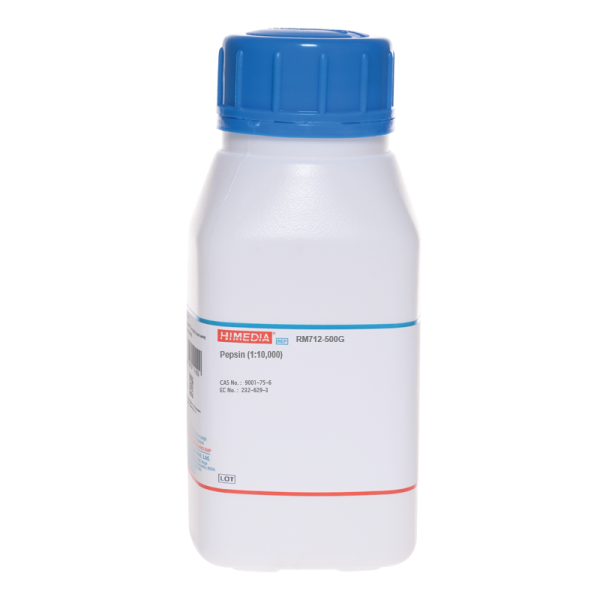
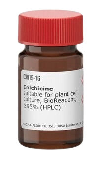
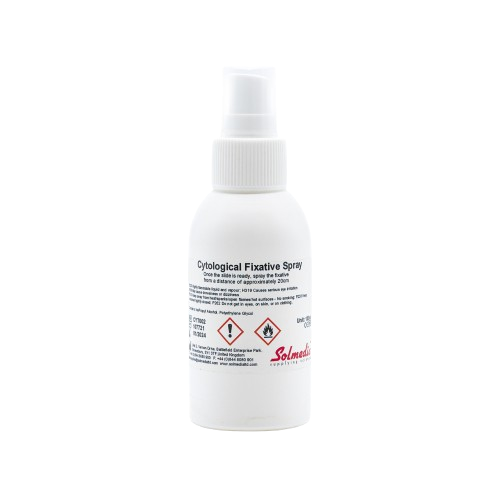
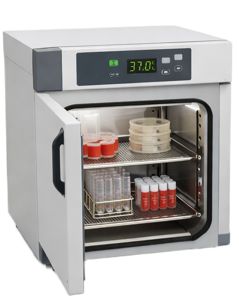
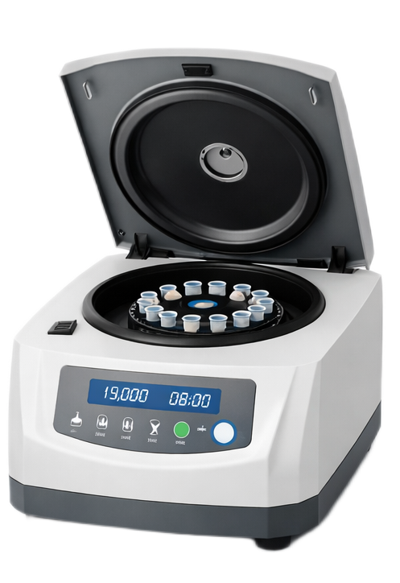
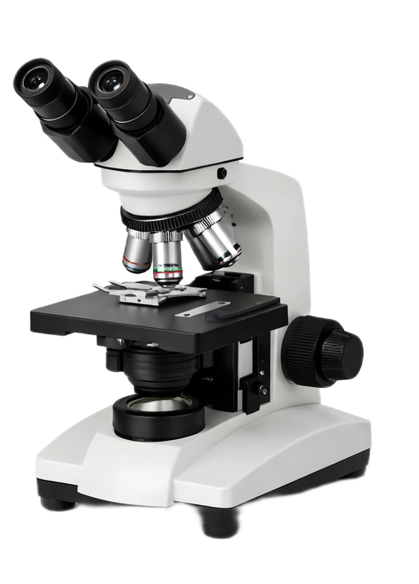

Цитогенетическая Лаборатория KaryoLab
Статус: Ожидание ваших действий


← перетащите к прибору/реагенту →
ФГА

Трипсин/Гимза

Колхицин

KCl 0.075M

Фикс. Карнуа

Дозатор

Термостат 37°C

Центрифуга

Микроскоп